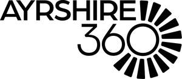

Trade Mark Journal No.2026/003 16 January 2026
UK00004315099 23 December 2025 (35,41,43)

- Class 35
- Business management of sporting venues [for others]; Business management of entertainment venues; Promotion of sports competitions and events; Organization of events, exhibitions, fairs and shows for commercial, promotional and advertising purposes; Promotion of musical concerts; Business management of sporting clubs; Advertising services to promote public awareness of the benefits of shopping locally; Advertising services to promote public awareness in the field of social welfare; Advertising services to promote public awareness of social issues; Development of business organization strategies relating to corporate social responsibility; Business networking services; Business management of sporting facilities [for others]; Business networking; Advertising services to promote public awareness of environmental matters; Development of concepts for business economy; Administration of cultural and educational exchange programs; Organisation of exhibitions for business or commerce; Organising of volunteer programmes for others.
- Class 41
- Artistic management of entertainment venues; Artistic management of music venues; Theatrical shows provided at performance venues; Musical floor shows provided at performance venues; Theatrical floor shows provided at performance venues; Management of events for sporting clubs; Booking of performing artists for events (services of a promoter); Booking of seats for shows and sports events; Booking of entertainment halls; Providing facilities for sports events; Booking of seats for entertainment events; Providing facilities for sporting events, sports and athletic competitions and awards programmes; Hosting of entertainment events; Provision of facilities for live band performances; Providing facilities for sports tournaments; Organising of sporting events, competitions and sporting tournaments; Organising of sports competitions and events; Rental of concert halls; Entertainment services in the form of concert performances; Booking of seats for concerts; Tournaments (Staging of sports -); Organising of sports competitions and sports events; Organising of sports events and of sports competitions; Organisation of sporting competitions and sports events; Organisation of concerts; Organisation of music concerts; Music concerts; Booking of sports facilities; Organization of sporting events and competitions; Organisation of sporting events and competitions; Organisation of conferences, exhibitions and competitions; Festivals (Organisation of -) for entertainment purposes; Providing performing arts theater facilities; Theatre performances; Organisation of entertainment events; Organising of festivals; Organisation of musical concerts; Live musical concerts; Arranging of festivals for entertainment purposes; Rental of entertainment halls; Live music concerts; Production of live entertainment events; Reservation services for concert and theatre tickets; Theatre and concert tickets reservation services; Organising of sports and sports events; Organising community sporting events; Organising of sporting events; Organising sporting events; Entertainment in the nature of live performances by musical bands; Providing cinema and theatre facilities; Organisation of events for cultural, entertainment and sporting purposes; Organisation of entertainment and cultural events; Organising events for entertainment purposes; Organisation of festivals; Management of concerts; Ticket reservation and booking services for education, entertainment and sports activities and events; Organising of exhibitions for entertainment purposes; Organising of recreational events; Conducting of performing arts festivals; Ticket reservation and booking services for music concerts; Presentation of live entertainment events; Organizing community sporting and cultural events; Entertainment in the nature of live performances by rock groups; Music festival services; Pop music concerts (Organisation of -); Ticket information services for entertainment events; Organising of theatre productions; Provision of sporting club facilities; Club sporting facilities (Provision of -); Arranging of festivals for cultural purposes; Hospitality services (entertainment); Providing facilities for entertainment; Corporate entertainment services; Corporate hospitality (entertainment); Organisation of entertainment services; Wedding celebrations (Organisation of entertainment for -); Organising community cultural events; Organisation of group recreational activities; Organizing cultural and arts events; Administration [organisation] of cultural activities; Providing health club and gymnasium services; Organization of entertainment events; Organisation of cultural events; Education services relating to conservation of the environment; Organization of events for cultural purposes; Health club services; Organisation of educational events; Cultural, educational or entertainment services provided by art galleries; Libraries; Lending libraries; Libraries (Lending -); Lending libraries for books; Library services; Library services for the lending of books; Lending library services and library services; Bookmobile services [mobile library]; Lending of books; Museums; Entertainment in the nature of ethnic festival; Organization of cultural shows; Cultural activities; Rental services relating to equipment and facilities for education, entertainment, sports and culture; Festivals (Organisation of -) for cultural purposes; Entertainment, sporting and cultural activities; Cultural services; Sporting and cultural activities; Cultural and sporting activities; Providing cultural activities; Health and wellness training; Health education; Physical health education; Health club services [health and fitness training]; Education in the field of occupational health and safety; Education services relating to health; Health and fitness training; Health and fitness club services; Health club [fitness] services; Health club services [exercise]; Provision of educational health and fitness information; Education services relating to physical fitness; Physical fitness education services; Providing of training in the field of health care and nutrition; Education services relating to the development of childrens' mental faculties; Provision of health club [physical exercise] facilities; Education services relating to nutrition; Education services relating to water safety; Physical fitness centre services; Physical fitness consultation; Educational services relating to physical fitness; Provision of educational services relating to health; Physical fitness centres; Golf courses; Golf tuition.
- Class 43
- Arranging of wedding receptions [venues]; Providing facilities for fairs and exhibitions; Providing facilities for exhibitions; Catering; Catering services; Mobile catering; Business catering services; Catering services for hospitality suites; Catering services for company cafeterias; Outside catering; Mobile catering services; Outside catering services; Catering services for educational establishments; Catering services for the provision of food; Providing food and drink catering services for convention facilities; Providing food and drink catering services for exhibition facilities; Catering of food and drinks; Food and drink catering for banquets; Catering for the provision of food and beverages; Catering in fast-food cafeterias; Food and drink catering; Catering of food and drink; Catering (Food and drink -); Catering services for conference centers; Consultancy services in the field of food and drink catering; Providing food and drink catering services for fair and exhibition facilities; Charitable services, namely providing food and drink catering; Catering services for the provision of food and drink; Food and drink catering for institutions; Office catering services for the provision of coffee; Catering for the provision of food and drink; Corporate hospitality (provision of food and drink); Food preparation services; Snack-bar services; Providing community centers for social gatherings and meetings.
East Ayrshire Leisure Trust